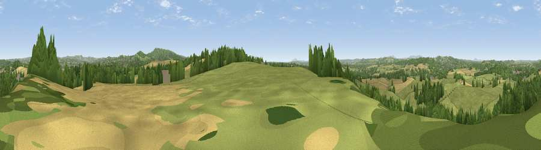

Viewpoint near Churchill
#20778 in England · top 45% of its area beats it · near ChurchillWhere it is
The exact computed spot (ST 44075 60225). Click the marker for map links.
The view, rendered

A 360° render of this exact spot computed from the terrain model, tree cover and land cover — summer colours, afternoon light, calibrated against photographs of famous viewpoints. Real trees, hedges and buildings will differ in detail.
The panorama
Grey silhouette: terrain skyline in each direction (720 bearings, Earth curvature and refraction included). Dashed green: skyline with trees (+15 m) and buildings (+8 m) as obstacles. Blue strip: how far the ground is visible on each bearing.
Where the view opens
Wedge length = distance to the farthest visible ground on that bearing (vegetation-aware). Rings at 10, 25 and 50 km.
What fills the view
61% grassland · 30% woodland · 5% cropland · 4% built-up
Angular shares of the visible panorama (visual magnitude), not map area. Landscape diversity 0.41 (0–1 Shannon).
Key numbers
More beautiful places nearby
The staircase of upgrades: each row has a higher view potential than everything closer. Driving times are estimates from straight-line distance, calibrated against real road routing — check an actual route before setting out.
| Place | Direction | Drive | Score |
|---|---|---|---|
| Viewpoint near Congresbury | NNE · 4 km | ~10 min | 69.4 |
| Viewpoint near Axbridge | SSW · 5 km | ~11 min | 79.2 |
| Beacon Batch | ESE · 5 km | ~11 min | 79.4 |
| Bleadon Hill [Loxton Hill] | WSW · 8 km | ~16 min | 79.6 |
| Viewpoint near Holford | SW · 35 km | ~53 min | 80.8 |
| Viewpoint near Holford | SW · 35 km | ~53 min | 82.2 |
| Viewpoint near Holford | SW · 36 km | ~54 min | 85.9 |
| Viewpoint near West Quantoxhead | WSW · 36 km | ~55 min | 87.9 |
51.33835, -2.80422 · source: screening · position refined by local search. Computed location — check access rights before visiting.